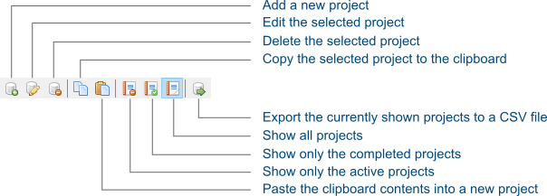
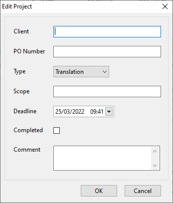
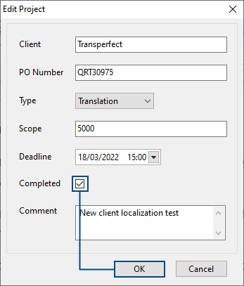
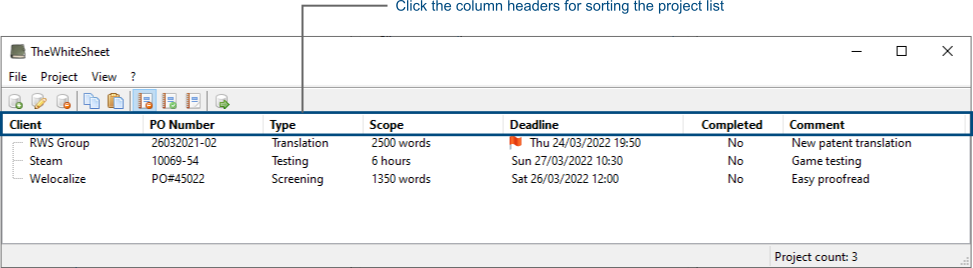
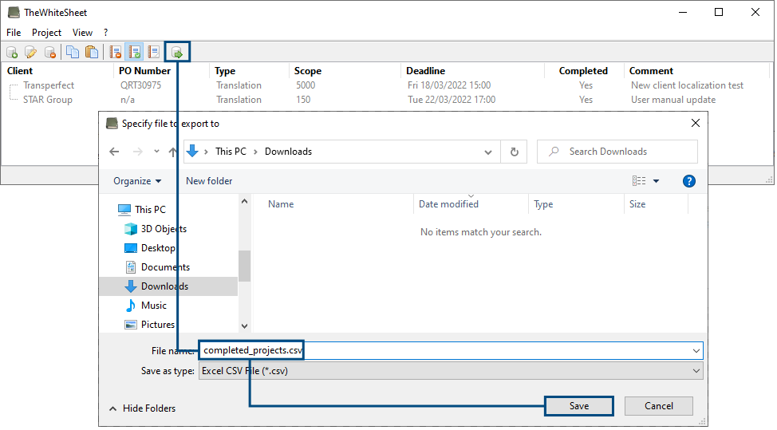
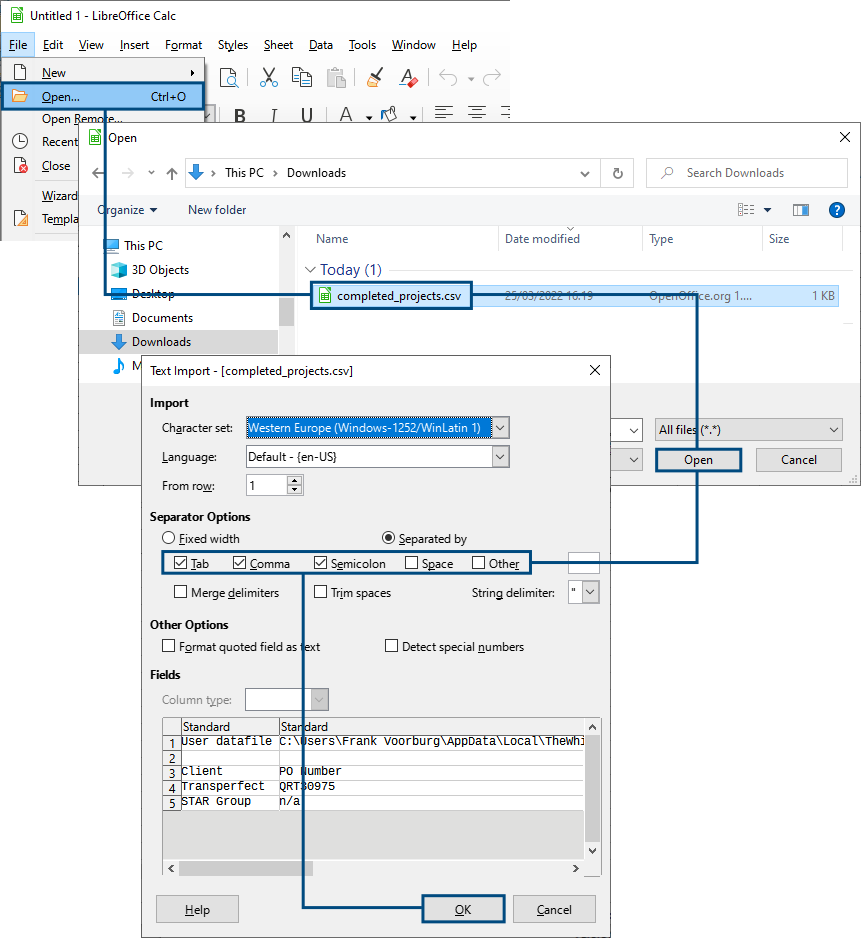

Getting started
This section familiarizes you with the user interface and helps you set up your first project.
User interface overview
The following screenshot present you with an overview of the user interface:

- Program menu
- File: Items for exporting the project list and for exiting the application.
- Project: Items for creating, editing and deleting projects.
- View: Items for changing the project list view, based on their completion status.
- ?: Access this user manual and an option to show the application's About-dialog.
- Toolbar
- Buttons for quick access to select commonly used program features.
- Project list
- Table display of all projects, based on the active view. Clicking a column header sorts the projects.
- Status bar
- Shows program hints.
- Displays the total number of projects in the active view.
Toolbar
Using the buttons available on the toolbar, offers a convenient and quick way to work with the application. When you move the mouse cursor over a button, the status bar displays a hint regarding its functionality. You can find an overview of what each toolbar button does, in the following illustration:

Create a new project
To create a new project, select Project →Â Add from the program menu, press Insert on the keyboard or click its associated toolbar button. This displays the Edit project dialog:

Start out by entering the name of your Client, select the project Type and the deadline.
It's recommended to also enter the Scope of the project. For example how many words need to be translated or proofread. This helps you keep track of how busy you are.
If you already received a purchase order for the project from your customer, then add it to the PO Number field. A handy reference for when its time to invoice completed projects.
Keep the Completed checkbox unchecked, since this is a new project. You can check the checkbox upon project completion.
In the Comment box, you can enter an optional project comment.
Once you completed entering the project's information, click the OK button.
Mark a project as completed
When you completed a project, you can mark it as such. To edit a project, click on it in the project list to select it. To edit the selected project, select Project → Edit from the program menu, press Enter on the keyboard or double-click the selected row in the project list.
This brings up the Edit project dialog for the project. To mark the project as completed, check the Completed checkbox and click the OK button:

Sorting projects
By clicking on the column header in the project list, you can sort the projects based on that column, in ascending order. Clicking the same column header again, you can change the sorting order. By default, the project list is sorted by deadline.

Changing the view
Three different views exist for further filtering the project list:
- All active (non-completed) projects. Keyboard shortcut F4.
- All completed projects. Keyboard shortcut F5.
- All projects. Keyboard shortcut F6.
You can use the View menu, associated toolbar buttons or the keyboard shortcuts to switch between the different views.
While actively working on your projects during the day, the view that shows the active projects is the recommended view.
When it's invoicing time, typically once a month or so, you can switch to the view showing only the completed projects. Next, sort by Client name and then create your invoice for the completed projects for a particular customer. You can even export the list of completed projects, for further processing and potentially automating the invoice generation.
Export the project list
With the export feature you can save the projects, shown in the current view, to a CSV file. CSV stands for Comma-Separated Values. Such CSV files are easily imported by spreadsheet programs like Microsoft Excel and LibreOffice Calc.
Chances are that you already use a spreadsheet for in some shape or form for the financial administration of your freelance business. This makes the export feature especially handy, because it enables you to easily import all project details from TheWhiteSheet into your spreadsheet.
To export the project list, select File→ Export for the program menu, press CTRL+e or click the associated toolbar button. As an example, the following screenshot illustrates how to export the list of completed projects to a file called completed_projects.csv:

Once exported, you can import the CSV file into your spreadsheet application:

Delete a project
Once you completed and fully processed a project, it's time to remove it from the project list. To delete a project, click on it in the project list to select it. Next, select Project → Delete from the program menu, press Delete on the keyboard or click the associated toolbar button. A dialog appears when you can confirm that you want to delete the project.
User settings
When you start and exit TheWhiteSheet, it automatically opens and saves your project list, respectively. These user settings are stored in a file called TheWhiteSheet.cfg, located in directory:
C:\Users\<user name>\AppData\Local\TheWhiteSheet\
It's recommended to include this file, each time you backup the personal files on your PC. If you're not yet backing up your pesonal files, consider installing a tool such as Veeam Agent. It's free and you can configure it to automatically run backups for you in the background.